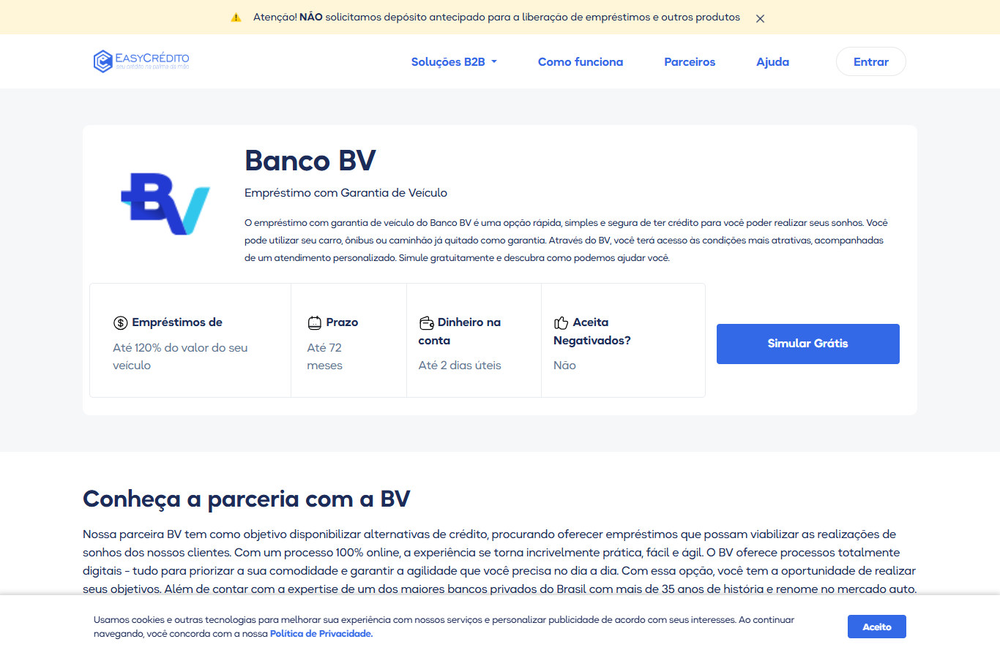

SIMIO · dossiê de candidato · campanha simio-20261118-184932-cc75 · gerado em 2026-11-18T20:44:56+00:00
https://easycredito.com.br/parceiros/bv
NO_INDICATION Prioridade LOW · Cenário A_LEGITIMATE_COMMERCIAL_MENTION · Revisão humana: NOT_REQUIRED
Este dossiê apresenta indícios para apoio à auditoria. Não constitui conclusão regulatória. As conclusões automatizadas devem ser verificadas contra as evidências brutas abaixo (screenshots, catálogo e arquivos com hash). Conteúdo de terceiros é exibido como texto; links não são clicáveis por segurança.
A página analisada pertence à plataforma EasyCrédito (easycredito.com.br/parceiros/bv) e divulga produtos do Banco BV de maneira legítima e transparente. A identidade comercial própria da EasyCrédito está destacada no domínio, cabeçalho e título; o texto se refere ao Banco BV sempre em terceira pessoa como instituição parceira; a jornada deixa claro que se trata de um comparador/intermediador de ofertas; e o rodapé traz a qualificação completa da empresa (CNPJ 24.081.684/0001-61) e sua condição de correspondente bancário. Não há indícios de tentativa de se passar por canal oficial do Banco BV. [Revisor: DOWNGRADE] A análise visual e textual confirma que a página pertence à plataforma EasyCrédito (Easyc Promotora de Serviços Financeiros e Corretagem de Seguros Online Ltda., CNPJ 24.081.684/0001-61) e atua de forma transparente como correspondente bancário e comparador de crédito. A relação de parceria com o Banco BV é explicitada desde a dobra inicial ('Conheça a parceria com a BV') e toda a comunicação trata o banco em terceira pessoa, sem qualquer tentativa de se passar por canal oficial da instituição financeira. A classificação REVIEW_REQUIRED decorreu apenas de um conflito automático com regras determinísticas estritas, sendo adequado o rebaixamento (DOWNGRADE) para NO_INDICATION e prioridade LOW.

| Ref | Tipo | Local | Conteúdo |
|---|---|---|---|
| E-URL | domain | url | URL final: https://easycredito.com.br/parceiros/bv (domínio: easycredito.com.br) |
| E-SHOT-VIEWPORT | screenshot | viewport | evidence\Cc505c93ffe\attempt-1\viewport.png (sha256 3b63934984b2760e…) |
| E-SHOT-FULL | screenshot | page | evidence\Cc505c93ffe\attempt-1\fullpage.png (sha256 2e07237b58471c41…) |
| E-TITLE | title | head | Empréstimo Pessoal Online Banco BV | EasyCrédito |
| E-META-1 | meta | head | description: Faça a simulação online e encontre o empréstimo perfeito para você, seja ele empréstimo pessoal, consignado ou empréstimo com garantia, sem burocracia! |
| E-META-2 | meta | head | og:title: Empréstimo Pessoal Online Banco BV | EasyCrédito |
| E-META-3 | meta | head | og:description: Faça a simulação online e encontre o empréstimo perfeito para você, seja ele empréstimo pessoal, consignado ou empréstimo com garantia, sem burocracia! |
| E-CANONICAL | meta | head | https://easycredito.com.br/ |
| E-HEAD-1 | heading | page | Banco BV |
| E-HEAD-2 | heading | page | Conheça a parceria com a BV |
| E-HEAD-3 | heading | page | Solicite seu empréstimo com a BV |
| E-HEAD-4 | heading | page | Como funciona o empréstimo na BV |
| E-HEAD-5 | heading | page | Empréstimo Seguro |
| E-HEAD-6 | heading | page | Esse empréstimo é Seguro? |
| E-HDR | text | header | Soluções B2B Como funciona Parceiros Ajuda Entrar |
| E-FOLD | text | viewport (acima da dobra) | Atenção! NÃO solicitamos depósito antecipado para a liberação de empréstimos e outros produtos Soluções B2B Como funciona Parceiros Ajuda Entrar Banco BV Empréstimo com Garantia de Veículo O empréstimo com garantia de veículo do Banco BV é uma opção rápida, simples e segura de ter crédito para você poder realizar seus sonhos. Você pode utilizar seu carro, ônibus ou caminhão já quitado como garantia. Através do BV, você terá acesso às condições mais atrativas, acompanhadas de um atendimento personalizado. Simule gratuitamente e descubra como podemos ajudar você. Empréstimos de Até 120% do valor do seu veículo Prazo Até 72 meses Dinheiro na conta Até 2 dias úteis Aceita Negativados? Não Simular Grátis Conheça a parceria com a BV Nossa parceira BV tem como objetivo disponibilizar alternativas de crédito, procurando oferecer empréstimos que possam viabilizar as realizações de sonhos dos nossos clientes. Com um processo 100% online, a experiência se torna incrivelmente prática, fácil e ágil. O BV oferece processos totalmente digitais - tudo para priorizar a sua comodidade e garantir a agilidade que você precisa no dia a dia. Com essa opção, você tem a oportunidade de realizar seus objetivos. Além de contar com a expertise de um dos maiores bancos privados do Brasil com mais de 35 anos de história e renome no mercado auto. Nossa parceria visa ajudar nossos clientes quando eles mais precisam. A colaboração BV é a aliança que redefine o negócio financeiro, com um foco incansável no cliente e na excelência. Usamos cookies e outras tecnologias para melhorar sua experiência com nossos serviços e personalizar publicidade de acordo com seus interesses. Ao continuar navegando, você concorda com a nossa Política de Privacidade. Aceito |
| E-FTR | text | footer | Easyc Promotora de Serviços Financeiros e Corretagem de Seguros Online Ltda. CNPJ/MF 24.081.684/0001-61 EasyCrédito Quem somos Ajuda Blog Soluções B2B Termos de uso Políticas de privacidade llms.txt llms-full.txt Produtos Empréstimo Pessoal Cartão de Crédito Empréstimo Consignado Empréstimo com Garantia de Imóvel Empréstimo com Garantia de Veículo Empréstimo FGTS Antecipação de Salário | Informações Legais Importante: Nossos serviços são gratuitos! Nunca enviamos qualquer tipo de cobrança para liberação de empréstimos. A plataforma EasyCrédito, disponível no domínio easycredito.com.br, pertence e é operada pela EASYC PROMOTORA DE SERVIÇOS FINANCEIROS E CORRETAGEM DE SEGUROS ONLINE LTDA - CNPJ: 24.081.684/0001-61, ("EasyC"), correspondente bancário nos termos da Resolução 3.954, de 24 de fevereiro de 2011 do Banco Central do Brasil, com sede à Rua 72, n. 223, Ed. QS Tower, Sala 1507, Setor Jardim Goiás, Goiânia - GO, CEP: 74.805-480. O EasyCrédito não é uma instituição financeira, somos uma plataforma online que facilita o acesso das pessoas a produtos e serviços financeiros ofertados por empresas credenciadas na plataforma. Atuamos como correspondente bancário de instituições financeiras nos termos da resolução 3.954, de 24 de fevereiro de 2011 do Banco Central do Brasil. VER MAIS |
| E-NAV | nav | header | <https://easycredito.com.br/> | Como funciona <https://easycredito.com.br/#how-it-works> | Parceiros <https://easycredito.com.br/#parceiros> | Ajuda <https://easyc.zendesk.com/> | Entrar <https://easycredito.com.br/entrar> |
| E-CTA-1 | cta | page | Fechar alerta |
| E-CTA-2 | cta | header | Soluções B2B |
| E-CTA-3 | cta | header | Entrar <https://easycredito.com.br/entrar> |
| E-CTA-4 | cta | page | Simular Grátis <https://easycredito.com.br/propostas> |
| E-CTA-5 | cta | page | Simular Grátis |
| E-CTA-6 | cta | page | Aceito |
| E-IMG-1 | image | header (acima da dobra) | imagem alt='Logo EasyCrédito' src=https://cdn2.easycredito.com.br/assets/main/logo-easycredito-6047341476fccf58a054d87a48cf1b8ab0f88b36b9af01dc0f54583ec18c93a7.png (130x32, acima da dobra) |
| E-IMG-2 | image | page (acima da dobra) | imagem alt='' src=https://cdn2.easycredito.com.br/assets/main/partners/lp_lenders_logos/bv-ccee0715c0b6d8e94c68b2fc3b095c4d0dcee29ec3bb7eb3841f65a29efcf9b5.png (152x108, acima da dobra) |
| E-IMG-3 | image | footer | imagem alt='logo EasyCrédito' src=https://cdn2.easycredito.com.br/assets/main/blank-ef1955ae757c8b966c83248350331bd3a30f658ced11f387f8ebf05ab3368629.gif (1x1, abaixo da dobra) |
| E-TXT-001 | text | page | Parceiros |
| E-TXT-002 | text | page | Banco BV |
| E-TXT-003 | text | page | O empréstimo com garantia de veículo do Banco BV é uma opção rápida, simples e segura de ter crédito para você poder realizar seus sonhos. Você pode utilizar seu carro, ônibus ou caminhão já quitado como garantia. Através do BV, você terá acesso às condições mais atrativas, acompanhadas de um atendimento personalizado. Simule gratuitamente e descubra como podemos ajudar você. |
| E-TXT-004 | text | page | Conheça a parceria com a BV |
| E-TXT-005 | text | page | Nossa parceira BV tem como objetivo disponibilizar alternativas de crédito, procurando oferecer empréstimos que possam viabilizar as realizações de sonhos dos nossos clientes. Com um processo 100% online, a experiência se torna incrivelmente prática, fácil e ágil. O BV oferece processos totalmente digitais - tudo para priorizar a sua comodidade e garantir a agilidade que você precisa no dia a |
| E-TXT-006 | text | page | dia. Com essa opção, você tem a oportunidade de realizar seus objetivos. Além de contar com a expertise de um dos maiores bancos privados do Brasil com mais de 35 anos de história e renome no mercado auto. Nossa parceria visa ajudar nossos clientes quando eles mais precisam. A colaboração BV é a aliança que redefine o negócio financeiro, com um foco incansável no cliente e na excelência. |
| E-TXT-007 | text | page | Precisamos de algumas informações suas para podermos consultar nossos parceiros. Aqui os seus dados estão seguros. |
| E-TXT-008 | text | page | Solicite seu empréstimo com a BV |
| E-TXT-009 | text | page | Solicitar seu empréstimo com a BV não tem custo e nem burocracia. Além disso, o processo é simples, rápido, seguro e 100% online. Tudo que você precisa fazer é fornecer o valor desejado e o número de parcelas no simulador ao lado. Em seguida, basta fazer o seu cadastro em nosso site, onde suas informações serão analisadas para que possamos oferecer a melhor oferta de crédito disponível para você. |
| E-TXT-010 | text | page | Como funciona o empréstimo na BV |
| E-TXT-011 | text | page | Depois de preencher o seu cadastro, você terá acesso a suas ofertas. A primeira etapa é a análise antifraude, na qual nosso sistema verifica a veracidade das informações pessoais fornecidas. Se o seu crédito for pré-aprovado, siga os passos dentro da plataforma para finalizar a sua operação. Após essa etapa, o time BV entrará em contato com você para dar continuidade a sua proposta, uma vez que |
| E-TXT-012 | text | page | * Estes valores poderão variar de acordo com os critérios de aprovação de crédito da instituição financeira tais como seus dados informados. |
| E-TXT-013 | text | page | Sim! O empréstimo da BV é projetado para ser seguro. Se esforçando para manter padrões rigorosos de segurança para proteger as informações e dados dos clientes, utilizando tecnologias avançadas para proteger as informações, como criptografia de dados e protocolos de segurança. Além de realizar processos de verificação de identidade para garantir que os clientes sejam quem afirmam ser, reduzindo o |
| E-TXT-014 | text | page | risco de fraude. A BV fornece informações claras sobre termos, taxas, encargos e condições do empréstimo, garantindo que os clientes estejam cientes de todos os detalhes. Escolher a BV é optar por um serviço financeiro que valoriza sua segurança e proteção. Todos os nossos parceiros são confiáveis, mas é sempre necessário ter cuidado antes de fazer qualquer solicitação online. |
| E-TXT-015 | text | page | Easyc Promotora de Serviços Financeiros e Corretagem de Seguros Online Ltda. CNPJ/MF 24.081.684/0001-61 |
| E-TXT-016 | text | page | A plataforma EasyCrédito, disponível no domínio easycredito.com.br, pertence e é operada pela EASYC PROMOTORA DE SERVIÇOS FINANCEIROS E CORRETAGEM DE SEGUROS ONLINE LTDA - CNPJ: 24.081.684/0001-61, ("EasyC"), correspondente bancário nos termos da Resolução 3.954, de 24 de fevereiro de 2011 do Banco Central do Brasil, com sede à Rua 72, n. 223, Ed. QS Tower, Sala 1507, Setor Jardim Goiás, Goiânia |
| E-TXT-017 | text | page | - GO, CEP: 74.805-480. |
| E-TXT-018 | text | page | O EasyCrédito não é uma instituição financeira, somos uma plataforma online que facilita o acesso das pessoas a produtos e serviços financeiros ofertados por empresas credenciadas na plataforma. Atuamos como correspondente bancário de instituições financeiras nos termos da resolução 3.954, de 24 de fevereiro de 2011 do Banco Central do Brasil. VER MAIS |
| Dimensão | Sinal | Achado | Refs |
|---|---|---|---|
| VISUAL_IDENTITY | LEGITIMATE | A página utiliza identidade visual própria da plataforma EasyCrédito (logotipo no cabeçalho e rodapé, esquema de cores e layout de comparador/marketplace), sem imitar os canais oficiais do Banco BV. | E-SHOT-VIEWPORT E-SHOT-FULL E-IMG-1 |
| DECLARED_COMMERCIAL_IDENTITY | LEGITIMATE | O estabelecimento identifica claramente sua marca comercial (EasyCrédito) no título, cabeçalho e domínio, além de apresentar razão social (Easyc Promotora de Serviços Financeiros e Corretagem de Seguros Online Ltda.), CNPJ (24.081.684/0001-61) e endereço completo no rodapé. | E-URL E-TITLE E-IMG-1 E-FTR E-TXT-015 E-TXT-016 |
| CORRESPONDENT_TRANSPARENCY | LEGITIMATE | Há declaração explícita no rodapé informando que a EasyCrédito não é uma instituição financeira e atua como correspondente bancário, além de deixar claro desde a área visível inicial que o Banco BV é uma instituição parceira. | E-FOLD E-HEAD-2 E-TXT-005 E-FTR E-TXT-016 E-TXT-018 |
| INSTITUTIONAL_LANGUAGE | LEGITIMATE | O texto refere-se ao Banco BV sempre em terceira pessoa ('Nossa parceira BV', 'O empréstimo com garantia de veículo do Banco BV', 'o time BV entrará em contato'), distinguindo claramente a plataforma ( | E-TXT-003 E-TXT-005 E-TXT-007 E-TXT-011 |
| LOGO_USAGE | LEGITIMATE | O logotipo do Banco BV é exibido dentro de um card informativo dedicado a apresentar a instituição como parceira na seção '/parceiros/bv', subordinado ao cabeçalho com o logotipo da EasyCrédito. | E-URL E-SHOT-VIEWPORT E-IMG-1 E-IMG-2 |
| SERVICE_JOURNEY | LEGITIMATE | A jornada é descrita de forma transparente como um processo de intermediação/comparação de ofertas ('Precisamos de algumas informações suas para podermos consultar nossos parceiros', 'Compare suas ofertas'), diferenciando a etapa na plataforma do contato posterior pelo banco. | E-SHOT-FULL E-TXT-007 E-TXT-009 E-TXT-011 |
| CONTACT_CHANNELS | NEUTRAL | Os links de navegação e suporte ('Ajuda') apontam para a estrutura própria da EasyCrédito (easyc.zendesk.com), sem simular centrais de atendimento ou ouvidoria do Banco BV. | E-NAV E-FTR |
| CONSUMER_CONFUSION | LEGITIMATE | Baixo risco de confusão para o consumidor: a estrutura da URL (/parceiros/bv), o cabeçalho da plataforma, a linguagem em terceira pessoa e os avisos legais deixam evidente que se trata de um correspondente/plataforma independente. | E-URL E-TITLE E-SHOT-VIEWPORT E-FOLD E-FTR |
A página analisada pertence à plataforma EasyCrédito (easycredito.com.br/parceiros/bv) e divulga produtos do Banco BV de maneira legítima e transparente. A identidade comercial própria da EasyCrédito está destacada no domínio, cabeçalho e título; o texto se refere ao Banco BV sempre em terceira pessoa como instituição parceira; a jornada deixa claro que se trata de um comparador/intermediador de ofertas; e o rodapé traz a qualificação completa da empresa (CNPJ 24.081.684/0001-61) e sua condição de correspondente bancário. Não há indícios de tentativa de se passar por canal oficial do Banco BV.
A página declara atuação como correspondente/prestador e identifica a empresa, mas não houve confirmação em cadastro autorizado.
| Tipo | Valor | Ref | Contexto |
|---|---|---|---|
| domain | easycredito.com.br | E-URL | |
| cnpj | 24.081.684/0001-61 | E-FTR | Easyc Promotora de Serviços Financeiros e Corretagem de Seguros Online Ltda. CNPJ/MF 24.081.684/0001-61 |
| legal_name | Easyc Promotora de Serviços Financeiros e Corretagem de Seguros Online Ltda | E-FTR | |
| legal_name | DE SERVIÇOS FINANCEIROS E CORRETAGEM DE SEGUROS ONLINE LTDA | E-FTR | |
| correspondent_declaration | correspondente bancário | E-FTR | Easyc Promotora de Serviços Financeiros e Corretagem de Seguros Online Ltda. CNPJ/MF 24.081.684/0001-61 EasyCrédito Quem somos Ajuda Blog Soluções B2B Termos de uso Políticas de privacidade llms.txt l |
| correspondent_declaration | não é uma instituição financeira | E-FTR | Easyc Promotora de Serviços Financeiros e Corretagem de Seguros Online Ltda. CNPJ/MF 24.081.684/0001-61 EasyCrédito Quem somos Ajuda Blog Soluções B2B Termos de uso Políticas de privacidade llms.txt l |
| correspondent_declaration | Atuamos como correspondente | E-FTR | Easyc Promotora de Serviços Financeiros e Corretagem de Seguros Online Ltda. CNPJ/MF 24.081.684/0001-61 EasyCrédito Quem somos Ajuda Blog Soluções B2B Termos de uso Políticas de privacidade llms.txt l |
| partnership_declaration | parceria | E-HEAD-2 | Conheça a parceria com a BV |
| partnership_declaration | Parceiros | E-FOLD | NÃO solicitamos depósito antecipado para a liberação de empréstimos e outros produtos Soluções B2B Como funciona Parceiros Ajuda Entrar Banco BV Empréstimo com Garantia de Veículo O empréstimo com gar |
| partnership_declaration | parceira | E-FOLD | Não Simular Grátis Conheça a parceria com a BV Nossa parceira BV tem como objetivo disponibilizar alternativas de crédito, procurando oferecer empréstimos que possam viabilizar as realizações de sonho |
Mapeamento indicativo para apoio à auditoria. Não constitui conclusão regulatória; a decisão definitiva pertence à auditoria.
Fonte: NORMATIVE
Art. 14. O contrato de correspondente deve estabelecer: [...] II - vedação à utilização, pelo contratado, de logomarca ou de outros atributos que sejam similares aos adotados pela instituição contratante em suas agências, postos de atendimento, sítio eletrônico na internet, aplicativo ou outras plataformas de comunicação em rede;
Evidência observada: E-IMG-1 E-IMG-2 E-SHOT-FULL E-SHOT-VIEWPORT E-URL
Fonte: NORMATIVE
Art. 14. O contrato de correspondente deve estabelecer: [...] III - divulgação ao público, pelo contratado, de sua condição de prestador de serviços à instituição contratante, identificada pelo nome com que é conhecida no mercado, com descrição dos produtos e serviços oferecidos e canais de contato da instituição contratante, inclusive de sua ouvidoria, em local visível, em destaque e em formato legível, por meio de: a) sítio eletrônico do correspondente na internet, acessível na página inicial; b) aplicativo e outras plataformas de comunicação em rede do correspondente; [...]
Evidência observada: E-FOLD E-FTR E-HEAD-2 E-IMG-1 E-SHOT-VIEWPORT E-TITLE E-TXT-003 E-TXT-005 E-TXT-007 E-TXT-011 E-TXT-015 E-TXT-016 E-TXT-018 E-URL
Fonte: NORMATIVE
Art. 3º O correspondente atua por conta e sob as diretrizes da instituição contratante, que assume inteira responsabilidade pelo atendimento prestado aos clientes e usuários por meio do contratado.
Evidência observada: E-SHOT-FULL E-TXT-007 E-TXT-009 E-TXT-011
Limitações: requisitos contratuais/internos não fornecidos: mapeamento limitado ao texto normativo
Decisão: DOWNGRADE → NO_INDICATION / LOW
A análise visual e textual confirma que a página pertence à plataforma EasyCrédito (Easyc Promotora de Serviços Financeiros e Corretagem de Seguros Online Ltda., CNPJ 24.081.684/0001-61) e atua de forma transparente como correspondente bancário e comparador de crédito. A relação de parceria com o Banco BV é explicitada desde a dobra inicial ('Conheça a parceria com a BV') e toda a comunicação trata o banco em terceira pessoa, sem qualquer tentativa de se passar por canal oficial da instituição financeira. A classificação REVIEW_REQUIRED decorreu apenas de um conflito automático com regras determinísticas estritas, sendo adequado o rebaixamento (DOWNGRADE) para NO_INDICATION e prioridade LOW.
| Tema | Severidade | Questionamento | Refs |
|---|---|---|---|
| legitimate_disclosure | NONE | As regras determinísticas elevaram a classificação para REVIEW_REQUIRED devido à ausência do nome do Banco BV dentro da frase exata do rodapé e da palavra 'correspondente' acima da dobra. Contudo, a página é especificamente dedicada à parceria ('/parceiros/bv'), exibe o título 'Conheça a parceria com a BV' na área visível inicial, mantém a identidade visual própria da EasyCrédito no cabeçalho e apresenta qualificação completa (razão social, CNPJ, endereço e declaração de não ser instituição financeira, mas correspondente bancário) no rodapé. Não há qualquer ambiguidade ou risco de confusão de marca. | E-URL E-TITLE E-IMG-1 E-HEAD-2 E-FOLD E-FTR E-SHOT-VIEWPORT E-SHOT-FULL |
| Fonte | Consulta / hipótese | URL original | Título / trecho |
|---|---|---|---|
| grounding | sites de empresas independentes no Brasil que usam a marca Banco BV como nome ou identidade principal do próprio site, sem serem o Banco BV H1-identity | https://easycredito.com.br/parceiros/bv | easycredito.com.br **EasyCrédito (`easycredito.com.br`):** Opera as páginas específicas intituladas *"Empréstimo Pessoal Online Banco BV"* e *"Banco BV - Empréstimo com Garantia de Veículo"*, utilizando a marca do banco como cabeçalho e chamada principal para simulação, sendo operada pela *EasyC Promotora de Serviços Financeiros Ltda (CNPJ 24.081.684/0001-61)* |
Original: https://easycredito.com.br/parceiros/bv
Final: https://easycredito.com.br/parceiros/bv
| Artefato | Caminho | SHA-256 | Bytes |
|---|---|---|---|
| screenshot_viewport | evidence\Cc505c93ffe\attempt-1\viewport.png | 3b63934984b2760eb9c197af1cc0731b181a6d2ad0cfd6753cd742b517d5258b | 138869 |
| screenshot_full | evidence\Cc505c93ffe\attempt-1\fullpage.png | 2e07237b58471c41aa9cbc7f9c404b5700d71bd83c4f85982894aa966dadfd93 | 475076 |
| html | evidence\Cc505c93ffe\attempt-1\page.html.txt | e3adfa70ba52365d068e7e72fd1262467abd6f761da4c043595c386305fa2425 | 31844 |
| text | evidence\Cc505c93ffe\attempt-1\text.txt | 9c955c51e2f97166e1126fc5c582a3a94c33720e6f8b6563fd39f5f83eb53802 | 6384 |
| page_data | evidence\Cc505c93ffe\attempt-1\page.json | 818069cb27cc52a5a97fc17ef36ee8ef1e5757e1ce7a4203dfa936fed12c80ab | 18580 |
| Quando | De | Para | Nota |
|---|---|---|---|
| 2026-11-18T19:13:21+00:00 | DISCOVERED | QUEUED | prioritised (score 4.5) |
| 2026-11-18T19:13:32+00:00 | QUEUED | COLLECTING | |
| 2026-11-18T19:13:47+00:00 | COLLECTING | COLLECTED | |
| 2026-11-18T19:13:47+00:00 | COLLECTED | ANALYZING | |
| 2026-11-18T19:14:29+00:00 | ANALYZING | REVIEWING | |
| 2026-11-18T19:14:43+00:00 | REVIEWING | COMPLETED |